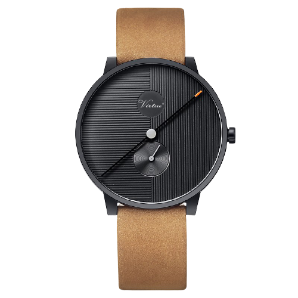

popular
Models

Son22
The watch also features a tough and durable sapphire crystal glass and comes with a Swiss SW200-1 automatic winding movement that has a power reserve.

Sw12
The watch also features a tough and durable sapphire crystal glass and comes with a Sw12-1 automatic winding
Product description
Inspired by the WWI trench watch, this timepiece has
a contemporary design with an urban style and a
vintage soul. The 22 Design Studio Concrete Sector
Watch reinterprets the old timepiece with a concrete
dial. Handmade in Taiwan, the dial is cast in one
piece using the béton technique more detailed